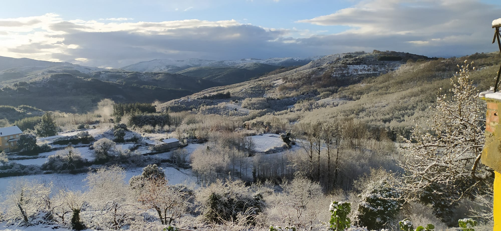
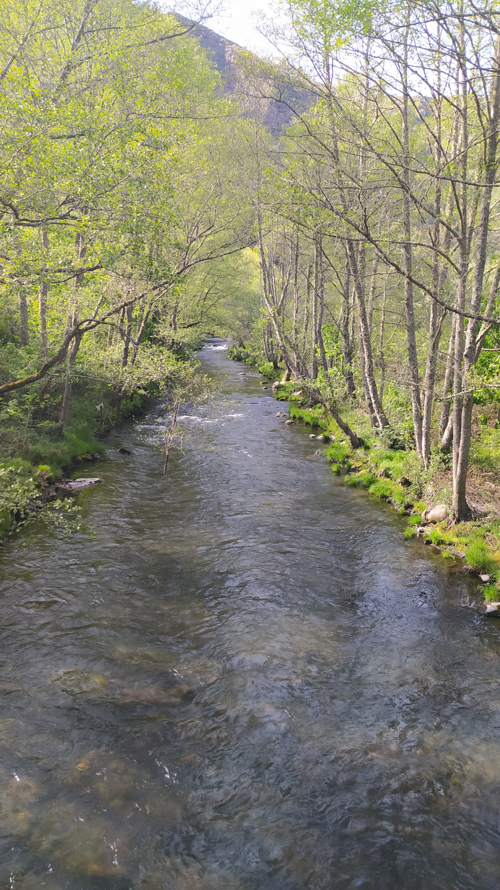
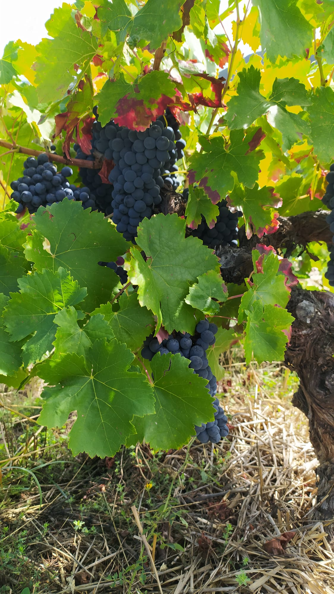
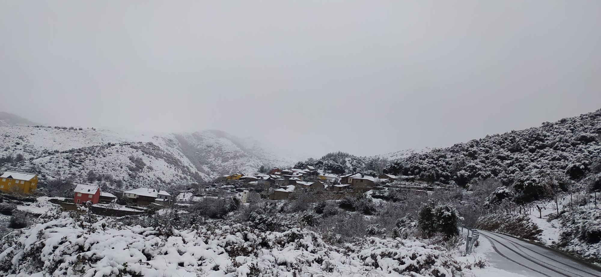

El Pueblo de Moreda
Un rincón de tranquilidad en la Reserva de los Ancares
Moreda es un pequeño pueblo enclavado en el corazón de El Bierzo, una tierra cubierta de naturaleza y vida. Ubicado en la Reserva de la Biosfera de los Ancares, este pueblecito leonés respira tranquilidad y autenticidad. Rodeado de montañas verdes, ríos cristalinos y bosques ancestrales, Moreda es el lugar perfecto para desconectar del ruido del mundo y reconectar con la naturaleza.
Con apenas 34 habitantes censados, mantiene la esencia rural de los pueblos de montaña. Sus tradiciones, sus gentes acogedoras y su paisaje virgen convierten a Moreda en un destino especial para quienes buscan autenticidad y paz. La piscina natural, la cercana playa fluvial y los caminos que salen del pueblo conectan con la grandiosidad del Bierzo.



